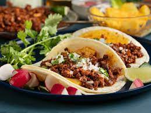

Tacos de Al Pastor

Description
Delicious tacos de al pastor a mexican favorite. Made like a gyro slicing.
I am Mexican but I do not know how to make this but i'll just act like I know what I am talking about.
Do not actually try to make this
Ingredients
- Slab of meat preferably pork
- Skewer
- Tortillas
- Diced yellow onion
- Cilantro
- Lime
Steps
- Season meat with imaginary seasoning
- Skewer meat
- Put in oven until internal temp is no longer raw and safe to eat
- Heat tortillas
- Add meat, add onion, cilantro, and lime as needed